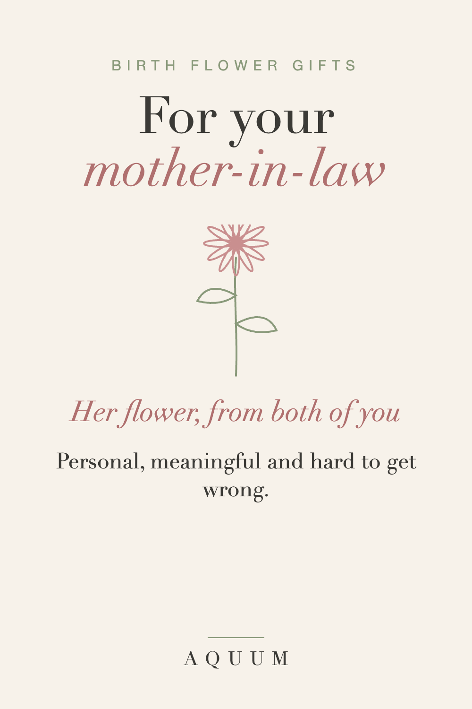

Birth Flower Gifts for Your Mother-in-Law: Thoughtful, Safe and Personal
2026-09-30
This article may contain affiliate links. How that works.

Shopping for a mother-in-law is its own kind of hard. You want something that shows you thought about her, not something generic, but you may not know her taste well enough to pick jewelry, decor or clothes in a style she'd choose herself.
A birth flower gift sits in the safe middle. It's personal, it comes with a meaning you can explain in one sentence, and it doesn't depend on guessing her taste.
Why it works for a mother-in-law
- You only need her birth month. Your partner knows it, and asking doesn't spoil anything.
- It says "I paid attention" without being too intimate.
- It starts a conversation. Most people have never been told what their birth flower means, and she'll probably ask.
Start with her flower
Find her month in the month-by-month guide. A few that suit a mother-in-law especially well:
- January · Carnation: love that doesn't give up. Carnations were the original Mother's Day flower.
- May · Lily of the Valley: the return of happiness, and a classic wedding flower. A lovely nod if she was part of your wedding.
- September · Aster: wisdom and patience.
- November · Chrysanthemum: honest friendship and good fortune.
Make it a family gift
- Her flower plus her grandchildren's. A small set with one flower per grandchild is the gift that gets kept. Our gifts for Grandma guide has more on family sets.
- Give it together with your partner, signed from both of you.
- Add the meaning to the card, and one line about something you admire in her.
What to write in the card
"Your birth flower is the aster. It means wisdom and patience, which is exactly what we think of when we think of you."
Short, warm and true beats long and formal.
For Christmas or her birthday?
Both work. For her birthday, her own flower is the natural choice. For Christmas, a family set turns the gift into something about all of you. Made-to-order gifts take about a week to be made and shipped in the US, so order by mid-December for Christmas. More holiday ideas are in our Christmas gift guide.